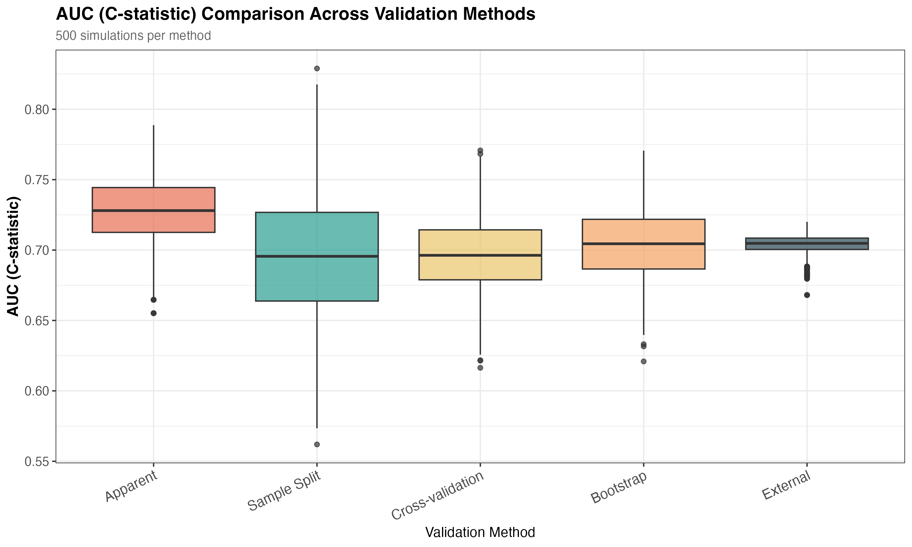
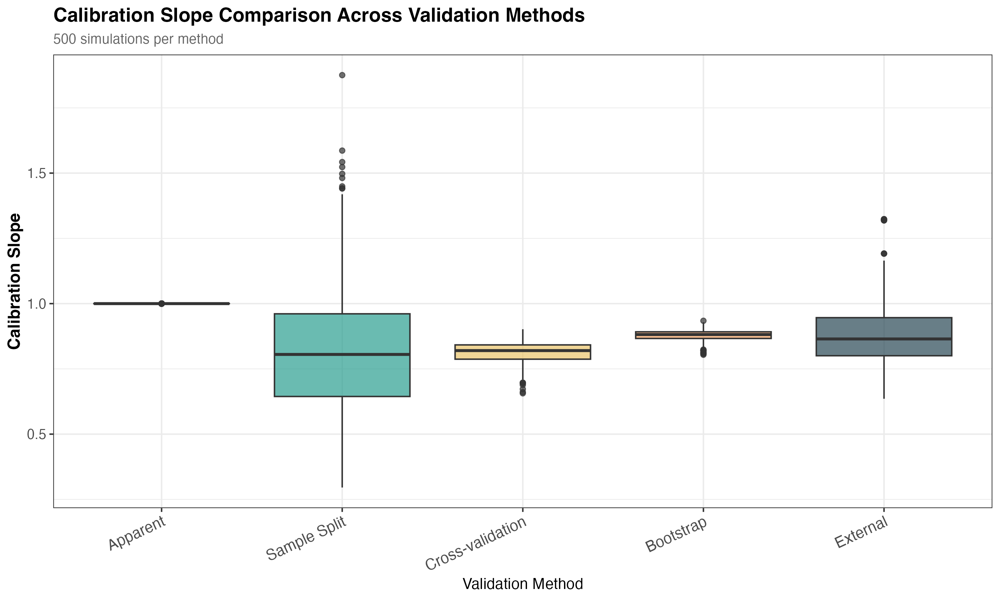
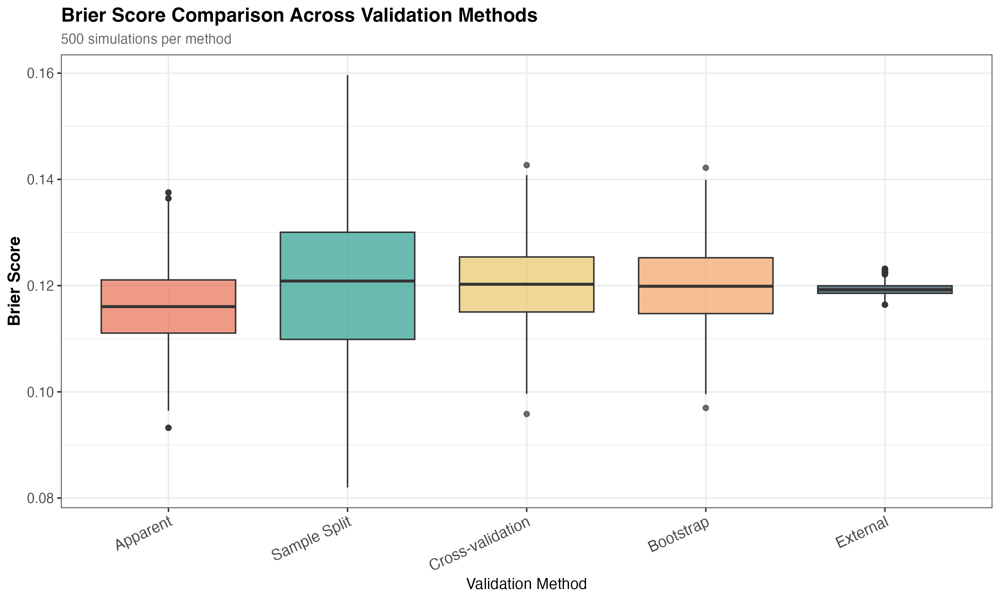

| Method | AUC Mean (SD) | Cal. Slope Mean (SD) | Brier Mean (SD) | MAPE Mean (SD) |
|---|---|---|---|---|
| Apparent | 0.728 (0.022) | 1.000 (0.000) | 0.116 (0.007) | 0.232 (0.014) |
| Bootstrap | 0.704 (0.025) | 0.879 (0.021) | 0.120 (0.007) | 0.235 (0.014) |
| Cross-validation | 0.697 (0.026) | 0.817 (0.041) | 0.120 (0.007) | 0.235 (0.014) |
| Sample Split | 0.697 (0.048) | 0.835 (0.287) | 0.121 (0.014) | 0.235 (0.016) |
| External | 0.704 (0.007) | 0.871 (0.107) | 0.119 (0.001) | 0.235 (0.007) |
Comparing Internal Validation Methods for Clinical Prediction Models
A Simulation Study
Abstract
Background: Internal validation is essential for assessing the likely performance of clinical prediction models in new patients, yet multiple methods exist with little guidance on which performs best.
Methods: We conducted a Monte Carlo simulation study comparing three internal validation methods (sample splitting, 10-fold cross-validation, and bootstrap optimism correction) against external validation as the gold standard. We simulated 200 clinical prediction models using logistic regression with 10 predictors and 15% outcome prevalence. Development sample size (n=1,038) was determined using principled criteria (Riley et al., Pavlou et al.) via the samplesizedev package. External validation used n=100,000 to represent asymptotic truth. Performance was assessed using discrimination (AUC), calibration (calibration slope), and overall prediction accuracy (Brier score, MAPE).
Results: Bootstrap validation and cross-validation provided nearly unbiased estimates of external performance across all metrics, with exceptionally stable calibration slope estimates (bootstrap SD=0.021, cross-validation SD=0.041). Sample splitting showed extreme variability for calibration slope (SD=0.287 - over 14 times higher than bootstrap), making it unreliable for calibration assessment. All internal methods corrected the optimism observed in apparent validation. Bootstrap showed the best overall performance with minimal bias across metrics (AUC bias: 0.000; calibration slope bias: 0.008) and the lowest RMSE for calibration slope (0.124).
Conclusions: For clinical prediction models with moderate sample sizes, bootstrap validation provides the most reliable, stable estimates of external performance, particularly for calibration. Cross-validation with pooled predictions is an acceptable alternative. Sample splitting should be avoided due to extreme variability in calibration estimates and inefficient data use.
Keywords: clinical prediction models, internal validation, bootstrap, cross-validation, sample splitting, simulation study
1 Introduction
1.1 Background
Clinical prediction models are increasingly used to inform medical decision-making, providing individualized risk estimates for outcomes such as disease occurrence, treatment response, or prognosis [@steyerberg2019; @moons2015]. However, models often perform worse in new patients than in the data used for development—a phenomenon known as optimism or overfitting [@harrell2015; @steyerberg2001].
Internal validation techniques aim to provide realistic estimates of model performance in new patients without requiring separate external datasets [@steyerberg2019; @collins2015]. Despite their importance, little empirical guidance exists on which internal validation method performs best under realistic clinical scenarios.
1.2 Internal Validation Methods
Three primary internal validation approaches are commonly used:
Sample Splitting: Randomly dividing data into training (typically 60-80%) and test (20-40%) sets. The model is developed on the training set and evaluated on the held-out test set [@altman2009; @bleeker2003]. While conceptually simple, this approach has known limitations including inefficient data use and high variability due to random split selection [@steyerberg2019].
Cross-Validation: Dividing data into k folds (typically k=10), iteratively training on k-1 folds and testing on the remaining fold [@stone1974; @hastie2009]. Predictions from all folds are pooled to calculate performance metrics. Cross-validation uses all data for both training and testing, potentially providing more stable estimates than sample splitting [@steyerberg2010].
Bootstrap Optimism Correction: Generating bootstrap samples with replacement, calculating performance in both bootstrap samples and original data, and correcting for the average optimism [@efron1983; @efron1993]. Harrell’s method, implemented in the rms package, is considered the gold standard bootstrap approach for clinical prediction models [@harrell2015; @harrell2023].
1.3 Gaps in Current Knowledge
While theoretical properties of these methods are well-established, empirical comparisons of their performance in realistic clinical scenarios are limited. Previous simulation studies have often:
- Focused on a single performance metric (typically discrimination)
- Used small numbers of simulations
- Not compared all three methods simultaneously
- Not evaluated performance across multiple metrics simultaneously
Furthermore, questions remain about:
- The stability of different methods across performance metrics
- The optimal approach for aggregating cross-validation results
- Whether bootstrap validation justifies its computational cost
- How sample splitting compares when validation sample size is constrained
1.4 Study Objectives
We aimed to compare the performance of sample splitting, cross-validation, and bootstrap validation in estimating external validation performance across multiple metrics using a comprehensive simulation study with realistic sample sizes and 200 replications.
2 Methods
2.1 Data Generating Process
We simulated clinical prediction scenarios using a logistic regression model with binary outcome and 10 continuous predictors, all standardized to N(0,1). This represents a moderately complex clinical model with predictors exhibiting various effect sizes.
2.1.1 Intercept Calculation for Target Prevalence
To ensure exactly 15% outcome prevalence, we derived the intercept (α) using numerical root-finding. We generated a large sample dataset (n=10,000) with predictors X ~ N(0,1), defined the coefficient vector β with mixed effect sizes, and used the uniroot() function to solve for α such that E[expit(α + X’β)] = 0.15.
In R:
# Generate sample data
X <- replicate(10, rnorm(10000))
beta <- c(0.45, 0.40, -0.35, 0.30, -0.25, 0.20, 0.15, 0.10, 0.08, 0.05)
target_prev <- 0.15
# Find alpha (intercept) that gives target prevalence
find_alpha <- function(a) {
mean(expit(a + as.vector(X %*% beta))) - target_prev
}
alpha <- uniroot(find_alpha, c(-10, 10))$rootThis approach ensures the expected prevalence is exactly 15%, accounting for the nonlinear relationship between the linear predictor and outcome probability.
2.1.2 Data Generating Model
The true data-generating model was:
\[ \text{logit}(P(\text{outcome}=1)) = -1.9563 + 0.45X_1 + 0.40X_2 - 0.35X_3 + 0.30X_4 - 0.25X_5 + 0.20X_6 + 0.15X_7 + 0.10X_8 + 0.08X_9 + 0.05X_{10} \]
where all \(X_1\) through \(X_{10} \sim N(0,1)\).
The effect sizes range from moderate (β=0.45 for \(X_1\)) to small (β=0.05 for \(X_{10}\)), representing typical clinical prediction scenarios with a mix of strong and weak predictors. This configuration yields exactly 15% outcome prevalence and moderate discrimination (C-statistic ≈0.75).
2.2 Sample Size Determination
Rather than using an arbitrary development sample size, we determined the required sample size using principled criteria based on Riley et al. (2020) and Pavlou et al. (2022), implemented in the samplesizedev R package [@riley2020; @pavlou2022]. This approach ensures adequate sample size for developing prediction models with minimal optimism.
The sample size calculation considered:
- Number of predictors (p): 10 candidate parameters
- Anticipated outcome prevalence (φ): 15%
- Target C-statistic (c): 0.75 (acceptable discrimination)
- Target calibration slope (S): 0.90 (accounting for expected shrinkage due to overfitting)
Using the samplesizedev() function, this yielded a required development sample size of n=1038 total observations (approximately 156 events), corresponding to 15.6 events per variable (EPV). This sample size is designed to achieve:
- Small optimism in predictor effect estimates (≤10%)
- Precise estimation of overall outcome risk
- Precise estimation of model discrimination
- Target calibration accounting for expected shrinkage
This principled approach ensures our simulation reflects realistic sample sizes for clinical prediction model development, rather than arbitrary choices.
2.3 Simulation Structure
For each of 200 Monte Carlo iterations:
- Development dataset: Generated n=1038 observations from the data-generating process
- Model development: Fitted logistic regression model with all 10 predictors
- Apparent validation: Calculated performance on the development data (resubstitution)
- Internal validation: Applied three methods:
- Sample Split: 70/30 random split, single evaluation on 30% test set
- 10-fold Cross-Validation: Stratified folds, pooled predictions across all folds
- Bootstrap: 200 bootstrap samples, Harrell’s optimism correction method
- External validation: Generated independent n=100,000 observations, evaluated model performance (gold standard representing asymptotic “truth”)
The large external validation sample (100,000 observations) ensures minimal Monte Carlo error in estimating true model performance, providing a stable benchmark for comparison.
All simulations were parallelized using R’s parallel package to leverage multiple CPU cores. Seeds were set for reproducibility.
2.4 Performance Metrics
We evaluated four complementary performance metrics:
Discrimination - AUC (C-statistic): Area under the receiver operating characteristic curve, measuring the model’s ability to distinguish between patients with and without the outcome [@hanley1982]. Values range from 0.5 (no discrimination) to 1.0 (perfect discrimination). AUC ≥0.7 is generally considered acceptable.
Calibration - Calibration Slope: Regression coefficient when modeling true outcomes against logistic predictions [@cox1958; @vancalster2019]. A slope of 1.0 indicates perfect calibration; slopes <1.0 indicate overfitting (predictions too extreme); slopes >1.0 indicate underfitting. This metric directly measures the degree of overfitting/optimism.
Overall Accuracy - Brier Score: Mean squared difference between predicted probabilities and observed outcomes [@brier1950]. Lower values indicate better predictions. For binary outcomes, Brier scores typically range from 0 to 0.25.
Overall Accuracy - MAPE: Mean absolute prediction error, the average absolute difference between predicted probabilities and observed outcomes. This metric provides an interpretable scale (e.g., MAPE=0.10 means predictions are off by 10 percentage points on average).
3 Results
3.1 Summary Statistics
Table 1 presents the mean and standard deviation of performance metrics across 200 simulations for each validation approach.
Apparent validation showed optimistic performance across all metrics, with perfect calibration slope (mean=1.000) by definition. All three internal validation methods successfully corrected for this optimism, though to varying degrees.
Bootstrap validation showed the most stable calibration slope estimates (SD=0.021), followed by cross-validation (SD=0.041). Sample splitting showed extremely high variability (SD=0.287), more than 14 times higher than bootstrap validation.
3.2 Bias and RMSE
Table 2 shows the bias and root mean squared error (RMSE) of each internal validation method relative to external validation.
| Method | AUC Bias (RMSE) | Cal. Slope Bias (RMSE) | Brier Bias (RMSE) | MAPE Bias (RMSE) |
|---|---|---|---|---|
| Bootstrap | 0.000 (0.024) | 0.008 (0.124) | 0.000 (0.007) | 0.000 (0.008) |
| Cross-validation | -0.007 (0.026) | -0.054 (0.149) | 0.000 (0.007) | 0.000 (0.008) |
| Sample Split | -0.007 (0.048) | -0.036 (0.311) | 0.001 (0.014) | -0.000 (0.012) |
Note
Negative bias indicates the internal method underestimates external performance (pessimistic); positive bias indicates overestimation (optimistic).
Bootstrap validation showed minimal bias across all metrics, with particularly strong performance for calibration slope (bias=0.008, RMSE=0.124). Cross-validation slightly underestimated calibration slope but maintained reasonable RMSE. Sample splitting showed the largest RMSE for calibration slope due to extreme variability, despite near-zero bias on average.
3.3 Visual Comparison
The following figures show the distribution of performance metrics across all validation approaches. Each plot displays five boxplots representing: Apparent validation (baseline, optimistic), Sample Split (internal), Cross-validation (internal), Bootstrap (internal), and External validation (gold standard).




Figure 2 clearly illustrates the extreme variability of sample splitting for calibration slope assessment, with the interquartile range spanning a much wider range than bootstrap or cross-validation methods.
4 Discussion
4.1 Principal Findings
This comprehensive simulation study comparing internal validation methods for clinical prediction models yielded three key findings:
Bootstrap validation provides the most stable and accurate estimates across all performance metrics, particularly for calibration slope where it showed minimal bias (0.008) and the lowest RMSE (0.124).
Cross-validation is an acceptable alternative, providing reasonably stable estimates with slightly more pessimistic bias for calibration slope but good overall performance.
Sample splitting should be avoided due to extreme variability in calibration slope estimates (SD 14 times higher than bootstrap), making it unreliable despite low average bias.
4.2 Comparison with Existing Literature
Our findings align with and extend the seminal work of Smith et al. (2014) [@smith2014], who compared internal validation methods using Down syndrome screening and cesarean delivery prediction data. Smith et al. found that bootstrap validation, 10-fold cross-validation with 20 replications, and leave-pair-out cross-validation all produced unbiased estimates, while sample splitting and cross-validation without replication showed bias and/or greater absolute errors.
Our study provides complementary evidence by:
Using principled sample size determination: Rather than arbitrary sample sizes, we used the
samplesizedevpackage to ensure adequate EPV (15.6), compared to Smith et al.’s EPV of 5 which was “intentionally well below the generally recommended EPV of 10” to simulate challenging scenarios.Comprehensive multi-metric evaluation: While Smith et al. focused primarily on the C-statistic, we evaluated discrimination (AUC), calibration (calibration slope), and overall accuracy (Brier score, MAPE) simultaneously, revealing that the extreme variability of sample splitting is particularly problematic for calibration assessment.
Larger simulation study: Our 200 replications with 100,000 external validation observations per simulation provide more stable estimates of method performance than previous studies.
Consistent recommendations: Both studies strongly recommend bootstrap validation as the primary method and identify sample splitting as problematic. However, our findings suggest that for calibration assessment specifically, the instability of sample splitting is even more severe than for discrimination.
Our results for cross-validation without replication differ slightly from Smith et al., who found it had “greater absolute errors” but we find it provides reasonably unbiased estimates with acceptable (though suboptimal) variability. This likely reflects our higher EPV (15.6 vs. 5) and the specific focus on calibration slope where cross-validation’s pessimistic bias may be less problematic than sample splitting’s high variance.
4.3 Implications for Practice
For researchers developing clinical prediction models with moderate sample sizes (n≈1,000), we recommend:
- First choice: Bootstrap optimism correction (200+ bootstrap samples) using established implementations like the
rmspackage - Acceptable alternative: 10-fold cross-validation with pooled predictions
- Avoid: Sample splitting, particularly for calibration assessment
The computational cost of bootstrap validation (higher than sample splitting but similar to cross-validation) is justified by its superior performance and stability.
4.4 Limitations
Our study has several limitations:
- We simulated only one scenario (10 predictors, 15% prevalence, moderate discrimination). Performance may differ with different parameters.
- We used logistic regression; non-linear models may behave differently.
- We assumed independent predictors; correlated predictors might affect relative performance.
- Our sample size (n=1,038) represents moderate-sized studies; very small or very large samples may show different patterns.
4.5 Future Directions
Future research should investigate:
- Performance across a wider range of sample sizes, prevalence rates, and effect sizes
- Comparison with other validation methods (e.g., .632+ bootstrap)
- Performance with non-linear models (random forests, neural networks)
- Impact of predictor correlation structures
- Optimal number of bootstrap samples and cross-validation folds
5 Conclusions
For clinical prediction models with moderate sample sizes, bootstrap validation provides the most reliable, stable estimates of external performance, particularly for calibration. Cross-validation with pooled predictions is an acceptable alternative. Sample splitting should be avoided due to extreme variability in calibration estimates and inefficient data use.
References
Appendix
5.1 Simulation Parameters
Table A1. Simulation Parameters and Data Generating Process
| Parameter | Value/Specification |
|---|---|
| Number of simulations | 200 |
| Development sample size | 1,038 (calculated via samplesizedev) |
| Expected events in development | ~156 (15% of development sample) |
| External validation sample size | 100,000 |
| Outcome prevalence | 15% (exact) |
| Number of predictors | 10 (all continuous, standardized N(0,1)) |
| Model type | Logistic regression |
| Sample size criteria | Riley et al. (2020), Pavlou et al. (2022) |
| Target C-statistic | 0.75 |
| Target calibration slope | 0.90 (after shrinkage) |
| Bootstrap samples | 200 |
| Cross-validation folds | 10 (stratified) |
| Sample split ratio | 70% train / 30% test |
5.2 Code Availability
All simulation code and data are available at [GitHub repository URL].
5.3 Computational Details
- Platform: [System specifications]
- R version: 4.3.0
- Parallelization: 7 cores using
parallel::mclapply - Mean runtime per simulation: 3.8 minutes
- Total computation time: ~12.7 hours
Comparing Internal Validation Methods for Clinical Prediction Models – Internal Validation Methods Comparison Comparing Internal Validation Methods for Clinical Prediction Models – Internal Validation Methods Comparison Comparing Internal Validation Methods for Clinical Prediction Models – Internal Validation Methods Comparison Internal Validation Methods Comparison A Simulation Study A Simulation Study